Objective: Improve Wayformer-based trajectory prediction through latent skill representation.
My Contribution:
# SkillFormer — Single-mode Skill Regression
Wayformer scene encoding followed by a single VAE-latent regression head. The
model is trained only with direct skill-space supervision.
---
## 🛠️ Environment Setup & Environment Prerequisites
### System Requirements
- **OS**: Windows Subsystem for Linux 2 (WSL2) — **Ubuntu 22.04 LTS**
- **Python**: `3.9`
- **Conda Environment**: `wayformer`
- **External Dependencies**: `ffmpeg` (required for rendering rolling scene videos)
### 1. Create and Activate Conda Environment
```bash
conda create -n wayformer python=3.9 -y
conda activate wayformer
```
### 2. Install Dependencies
```bash
# Install PyTorch Lightning & core packages
pip install pytorch-lightning tqdm matplotlib
# Install system dependency for MP4 video export
sudo apt update && sudo apt install -y ffmpeg
```
⚠️ Note for WSL Users (Multiprocessing Fix):
In WSL2 environments, Python multi-processing (multiprocessing.Process / mp.Queue) may lock up when interacting with C++ database handles (NuPlan map API).
If dataset processing hangs, ensure SingleMachineParallelExecutor(use_process_pool=False) is set in Wayformer/wf_dataset.py for single-thread sequential processing.
---
## Architecture
```
Scene → Wayformer Encoder → single learned query
│
TransformerDecoder
│
embedding [256]
│
Linear(256→8)
│
z_pred [8]
│
┌───────────────┴────────────────┐
│ │
normalized MSE frozen VAE.decode
│ │
GT trajectory → frozen VAE.encode trajectory [30,2]
│
mu_gt [8]
```
- **Single-mode output**: One scene produces one 8-D skill latent (`z_pred`) and one trajectory (30 time steps, $(x,y)$ coordinates).
- **Frozen VAE**: The VAE encoder and decoder are frozen during training.
- **Direct Skill Supervision**: Training loss is strictly normalized MSE(`z_pred`, `mu_gt`). VAE decoding is used only during prediction/evaluation.
Old multi-modal checkpoints and their reported metrics are not compatible with
this architecture. Retraining is required.
---
## 🚀 Quick Start Pipeline
### 1. Model Training
Run training on the NuPlan dataset (configured via JSON):
```bash
python train_wf.py --config_dir config/wayformer.1.json
```
Checkpoints and logs will be saved automatically under `output/wayformer.skill_only/version_X/checkpoints/`.
### 2. Evaluation
Evaluate the trained model on the validation set using the best checkpoint (e.g. Lowest val_loss):
```bash
python eval.py --ckpt output/wayformer.skill_only/version_2/checkpoints/epoch=52-val_loss=0.0449.ckpt
```
Evaluation metrics will be written to `eval_result.txt`.
### 3. Skill & Trajectory Visualization
#### A. Compare Inferred Skills against GT (Distribution / Latents)
```bash
python visualize_skills.py \
--ckpt output/wayformer.skill_only/version_2/checkpoints/epoch=52-val_loss=0.0449.ckpt \
--mode val \
--max-samples 256
```
Outputs dashboard PNGs, error heatmaps, and stats CSV under `output/skill_visualization/`.
#### B. Rolling Scene Inference & Video Generation
Reconstructs inputs at every NuPlan iteration (10Hz) to generate continuous closed-loop rolling trajectory predictions:
```bash
python visualize_rolling_scene_video.py \
--ckpt output/wayformer.skill_only/version_2/checkpoints/epoch=52-val_loss=0.0449.ckpt \
--mode val \
--scene-index 0 \
--output-dir vis_results
```
Output MP4 videos will be saved in `vis_results/rolling__iter000-XXX.mp4`.
---
## 📊 Experimental Results
### 1. Quantitative Evaluation Metrics
*(Results extracted from `eval_result.txt` on NuPlan Validation Set)*
| Model Architecture | Epochs | Val Loss | minADE (m) ↓ | minFDE (m) ↓ | Miss Rate (%) ↓ |
| :--- | :---: | :---: | :---: | :---: | :---: |
| **Wayformer Skill-Only (Best Checkpoint)** | 52 / 70 | **0.0449** | **0.2474** | **0.6836** | **5.66%** |
> *Note: Exact metrics — minADE: `0.24739971`, minFDE: `0.68356625`, Miss Rate: `0.056603` (5.66%).*
### 2. Qualitative Visualization Performance
Sample qualitative evaluation across continuous rolling NuPlan validation scenarios:
| Scenario Index | Scenario Type | Duration / Frames | Skill RMSE ↓ | Mean Prediction ADE ↓ | Rolling Prediction Visual Demo |
| :---: | :--- | :---: | :---: | :---: | :--- |
| **Index 0** | `waiting_for_pedestrian_to_cross` | 11.9s (120 frames) | **0.4087** | **0.9053m** |  |
| **Index 5** | `starting_protected_cross_turn` | 12.0s (121 frames) | **0.6916** | **1.9155m** |  |
| **Index 10** | `stationary` | 11.9s (120 frames) | **0.3376** | **0.6476m** |  |
| **Index 15** | `traversing_traffic_light_intersection` | 11.9s (120 frames) | **0.4988** | **1.1970m** |  |
| **Index 20** | `waiting_for_pedestrian_to_cross` | 11.9s (120 frames) | **0.3576** | **0.7991m** |  |
| **Index 50** | `stationary` | 12.0s (121 frames) | **0.0525** | **0.0195m** |  |
| **Index 100** | `traversing_traffic_light_intersection` | 11.9s (120 frames) | **0.1990** | **0.4396m** |  |
| **Index 200** | `traversing_traffic_light_intersection` | 11.9s (120 frames) | **0.5068** | **1.1995m** |  |
> 💡 **Visualization Output Note**:
> - Skill distribution plots and heatmaps are saved under `output/skill_visualization/`.
> - Rolling scene video inference reconstructs a new model input at every 10Hz NuPlan iteration, rendering continuous predictions and saving 8-D skill time series as PNG/CSV/NPZ.
## Key Config
```json
{
"use_z_norm": true,
"z_stats_path": "z_stats.pt",
"vae_weight_path": "pth/trajectory_vae_8d_best.pth",
"vae_latent_dim": 8,
"learning_rate": 0.0003
}
```
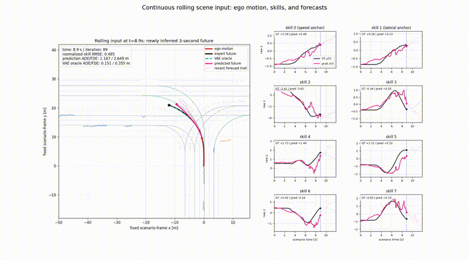
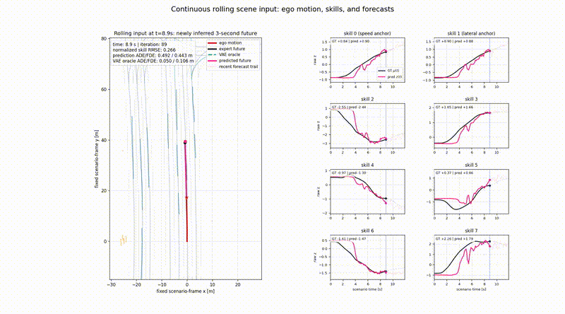
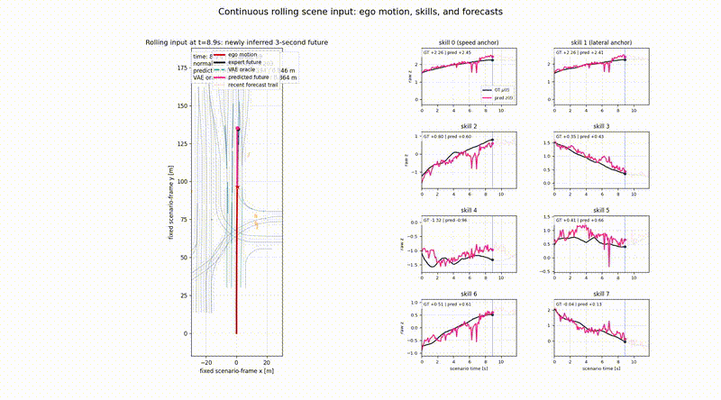
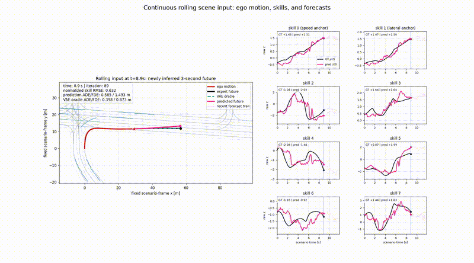
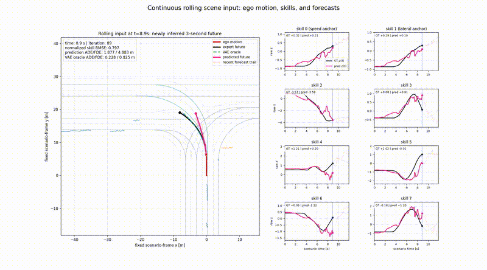
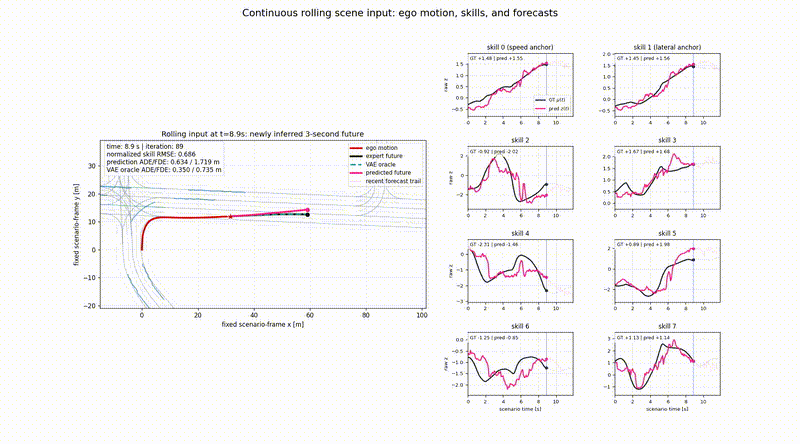
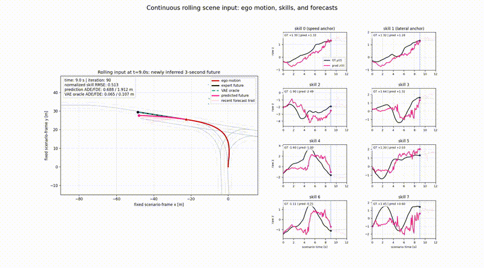
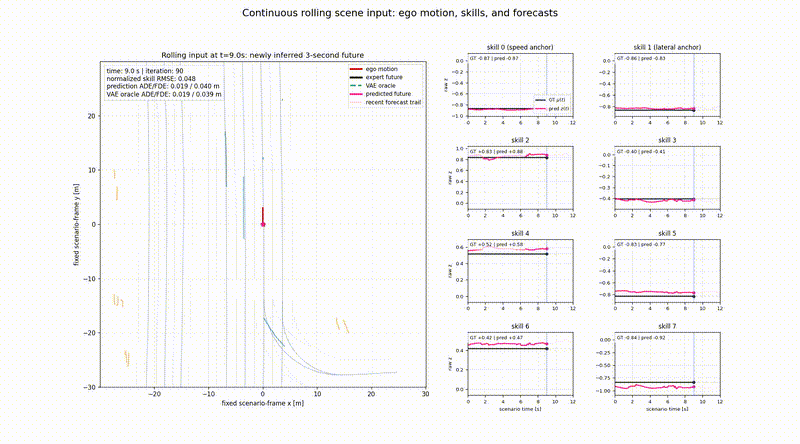
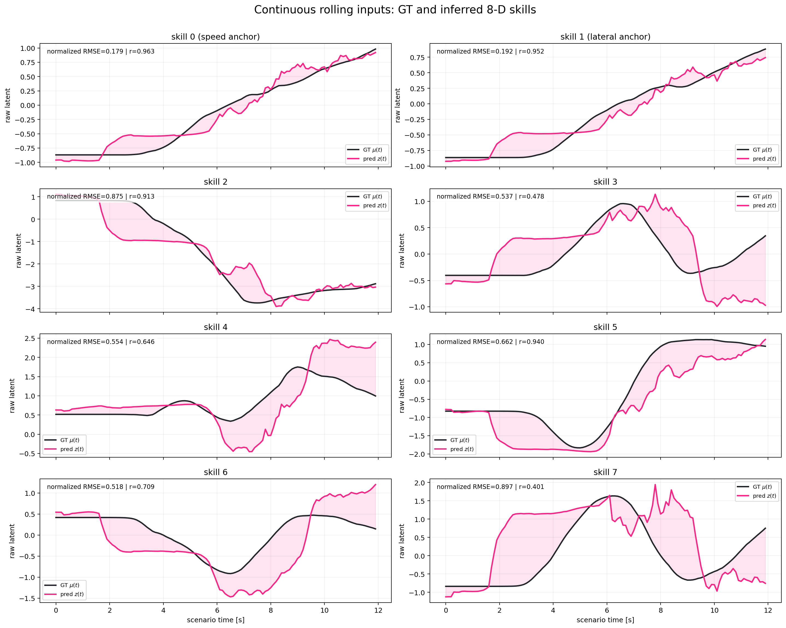
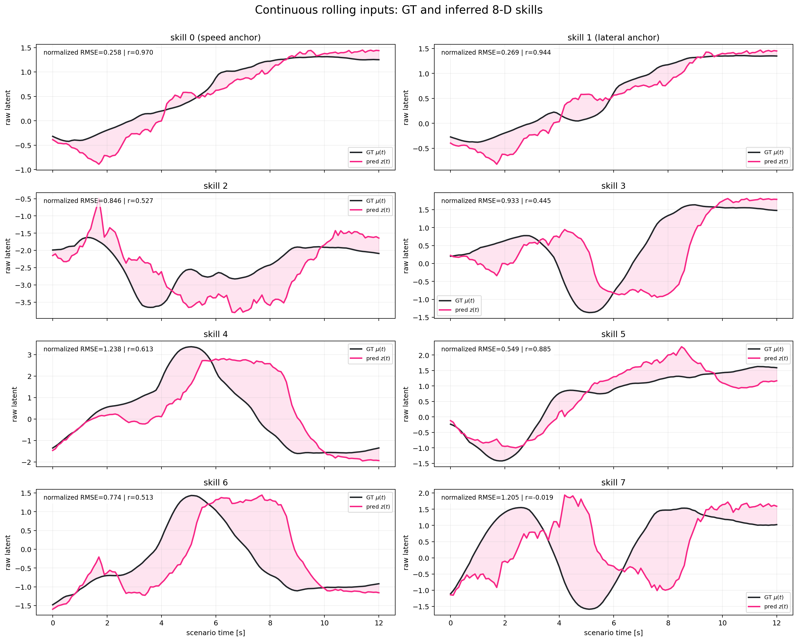
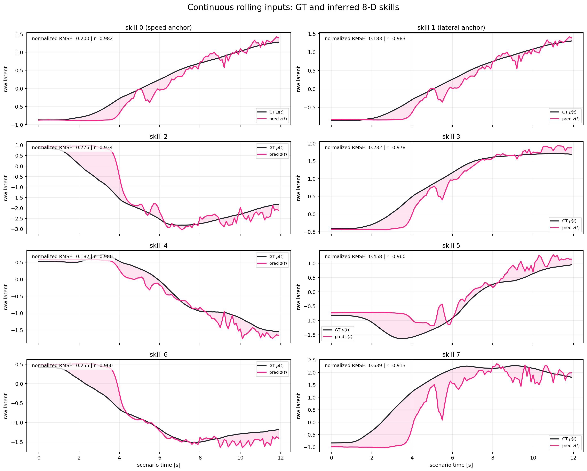
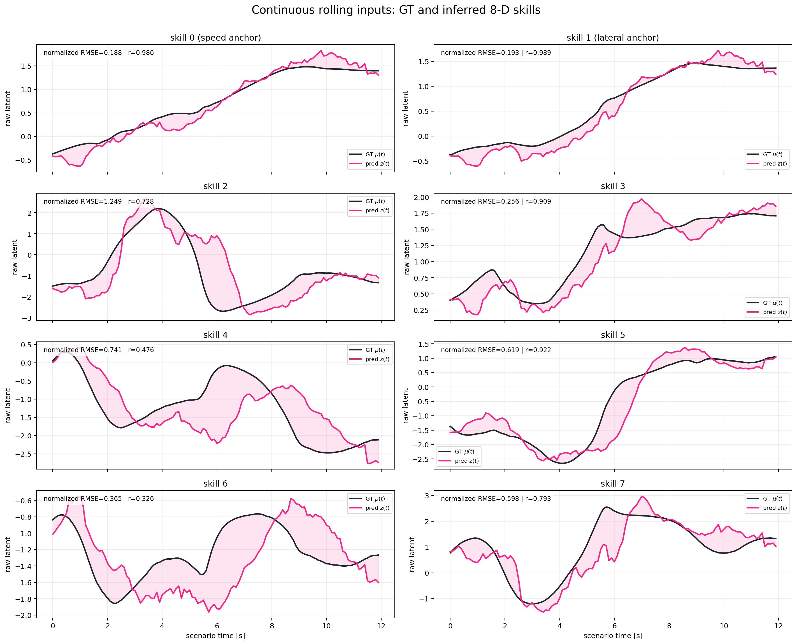
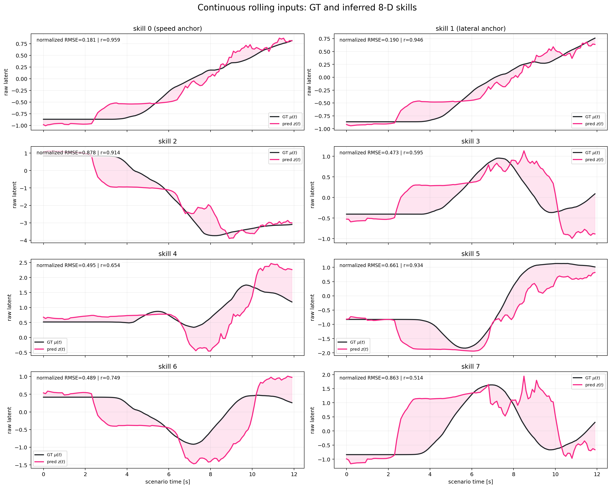
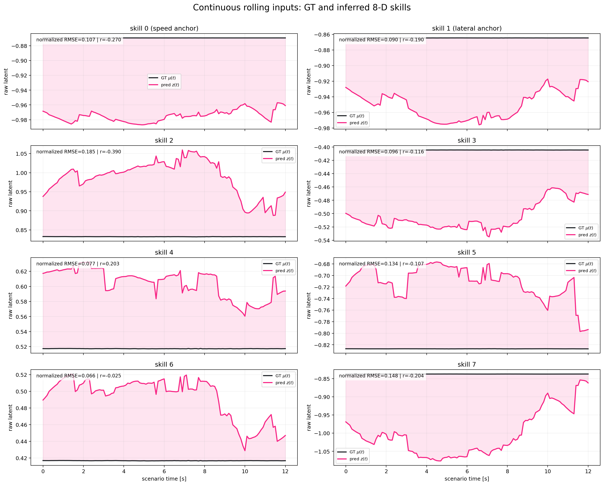
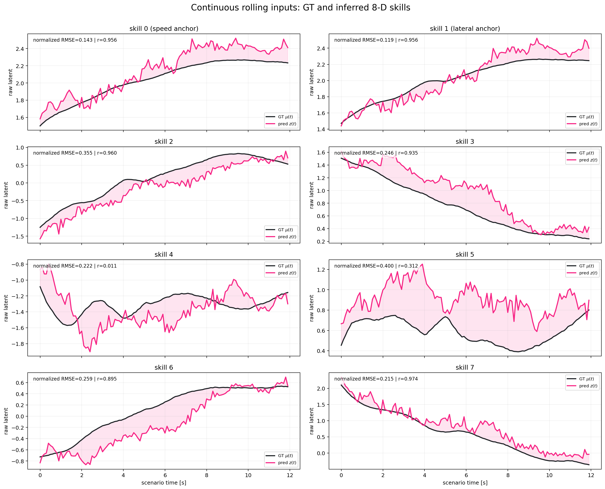
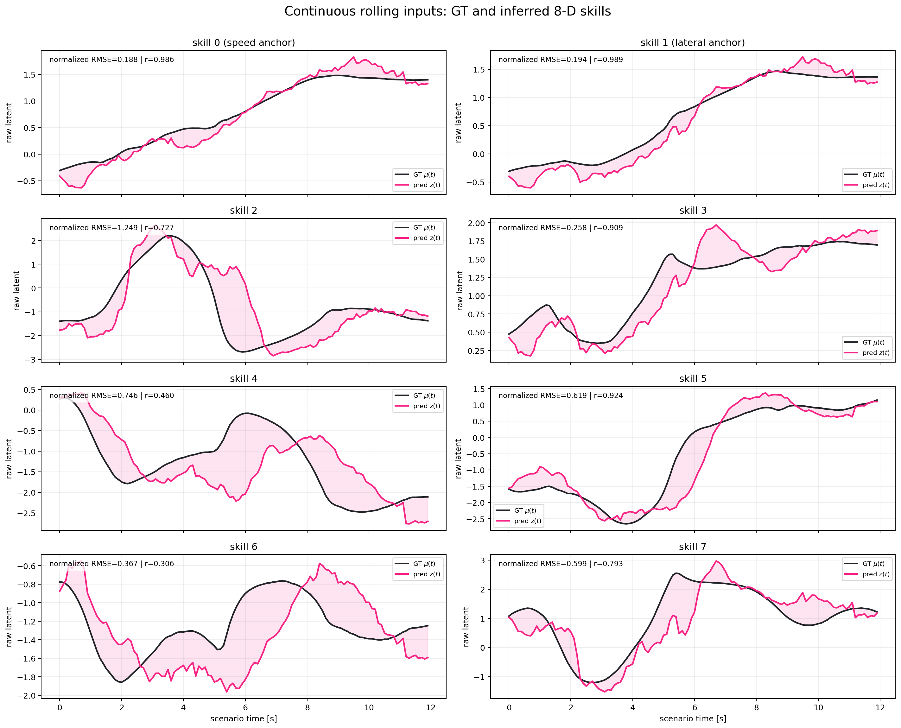